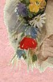

|  |
 |
Choose the
section you wish to visit by moving your mouse over the lady,
then Click to
Enter, or
-------- use the links below -------
Dolls, Doll Kits, Patterns, Trims & Projects - Molds

If you would like to be on our mailing list, please Click Here

|
Want to join a |
This is a photo of Joy and John taken at the MET show,
October 13/14, 2001
Gosh! I guess mother and son look alike!